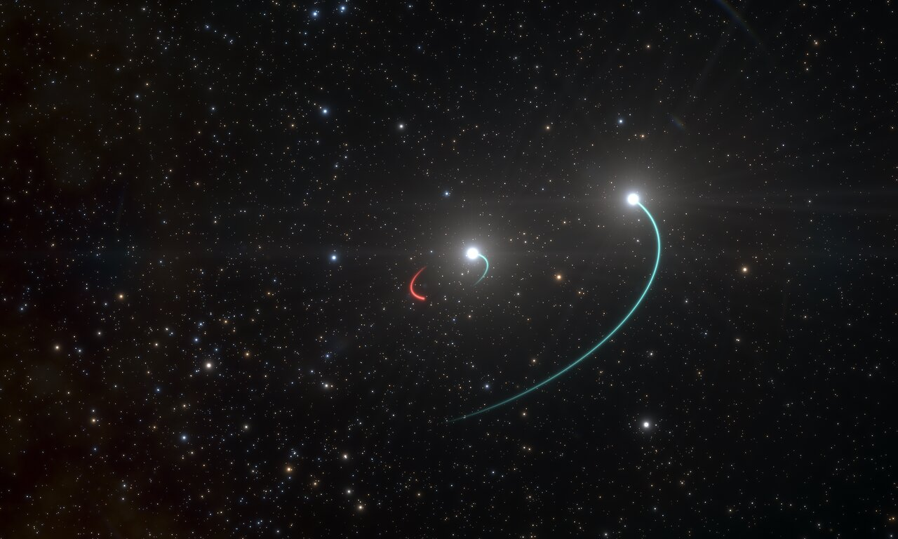

НАЙДЕНА БЛИЖАЙШАЯ К ЗЕМЛЕ ЧЕРНАЯ ДЫРА
Группа астрономов из Европейской южной обсерватории (ESO) и других институтов обнаружила черную дыру всего в тысяче световых лет от Земли. Эта черная дыра ближе к Солнечной системе, чем все остальные, известные на сегодняшний день. Она входит в тройную систему звезд, видимую невооруженным глазом.
Существование черной дыры ученые доказали, отслеживая движения двух ее звезд-компаньонов с помощью 2,2-метрового телескопа MPG/ESO в обсерватории ESO Ла Силья в Чили. «Мы были поражены, когда поняли, что это первая кратная система звезд с черной дырой, видимая простым глазом», — рассказал один из авторов открытия Петр Хадрава (Petr Hadrava).
Изначально специалисты наблюдали систему HR 6819 в рамках своего исследования двойных звездных систем. Однако оказалось, что в системе HR 6819 присутствовало третье, ранее не обнаруженное тело, которое оказалось черной дырой. Наблюдения показали, что одна из двух видимых звезд обращается вокруг невидимого компаньона за 40 дней, а вторая находится на большом расстоянии от этой внутренней пары. Тройная система, о которой идет речь, расположена в созвездии Телескопа — тусклом созвездии южного полушария неба.
Скрытая черная дыра в HR 6819 — одна из самых первых обнаруженных черных дыр звездной массы, которые не взаимодействуют активно со своим окружением и поэтому остаются поистине черными. Группа сумела выявить ее присутствие и вычислить ее массу, исследуя орбиту звезды внутренней пары. «Невидимый объект массой по меньшей мере в 4 массы Солнца может быть только черной дырой», — говорит работающий в Чили сотрудник ESO Томас Ривиниус (Thomas Rivinius).
На сегодняшний день астрономы нашли в нашей Галактике всего пару десятков черных дыр. Почти все они активно взаимодействуют со своим окружением и выдают свое присутствие мощным рентгеновским излучением, возникающим при этом взаимодействии. Но, по оценке ученых, за время жизни Млечного Пути в черные дыры в конце своей эволюции должно было превратиться гораздо больше звезд. Открытие «спящей» невидимой черной дыры в HR 6819 подсказывает, где могут находиться многие скрытые черные дыры Млечного Пути.